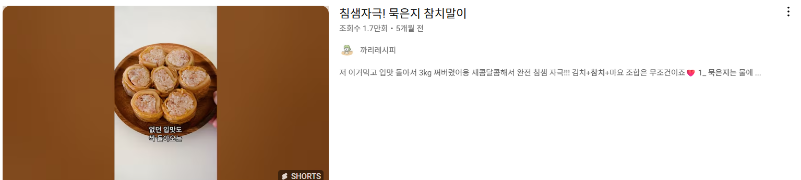

상세 레시피
🥢 묵은지 참치말이 레시피 (2인분)
재료
- 잡곡밥 1.5공기 (300g)
- 참치 통조림 (소) 2개
- 묵은지 6~8장
- 마요네즈 2큰술
- 후추 약간
- 깻잎 10장 내외
- 들기름 약간
- 통깨 약간
- 소금 약간
만드는 법:
- 묵은지는 물에 깨끗하게 씻은 후 체에 받쳐 물기를 제거해 주세요.
- 참치 통조림은 기름을 쫙 따라낸 후, 마요네즈와 후추를 약간 넣고 골고루 섞어줍니다.
- 따뜻한 잡곡밥에 소금과 들기름을 약간 넣고 골고루 비벼줍니다.
- 김밥 위에 묵은지를 겹쳐서 넓게 펼칩니다.
- 묵은지 위에 밥을 고르게 펴고, 깻잎을 올린 후 마요네즈에 버무린 참치를 올려 돌돌 말아주세요.
- 묵은지 말이 겉면에 들기름을 살짝 바른 후 먹기 좋은 크기로 썰어줍니다.
- 접시에 예쁘게 담고 통깨를 솔솔 뿌려주면 완성!
유튜브 영상 보러가기
